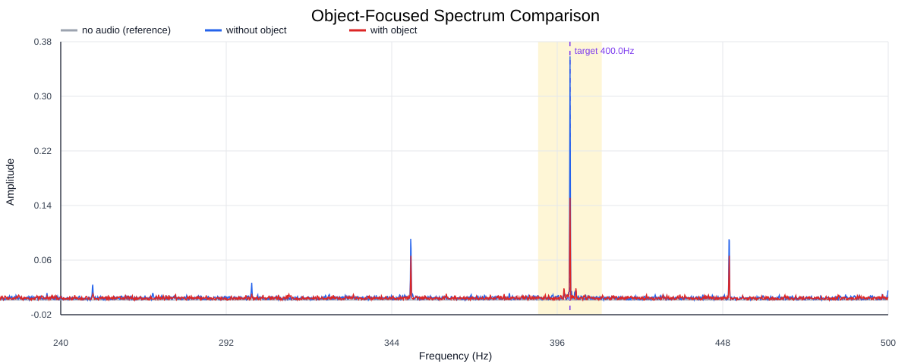
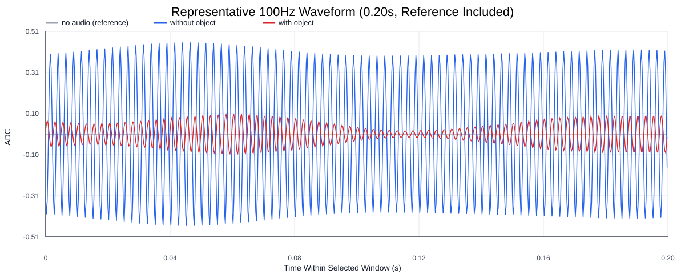
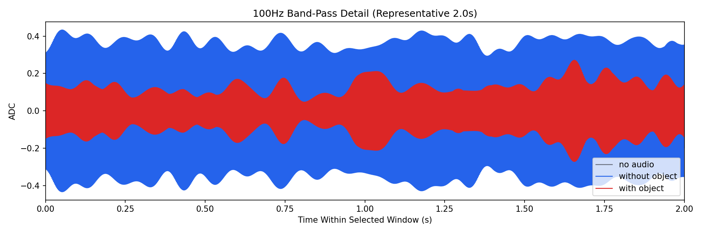
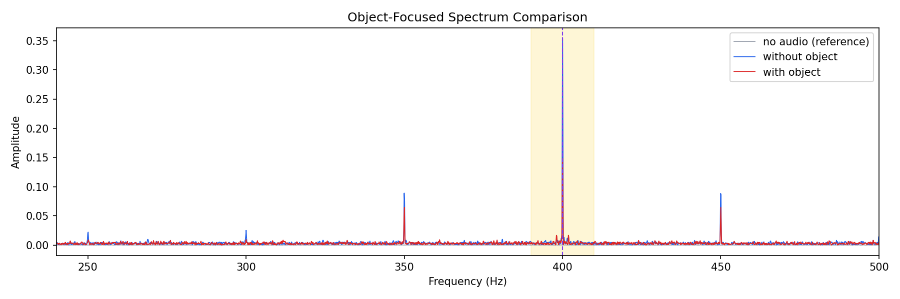
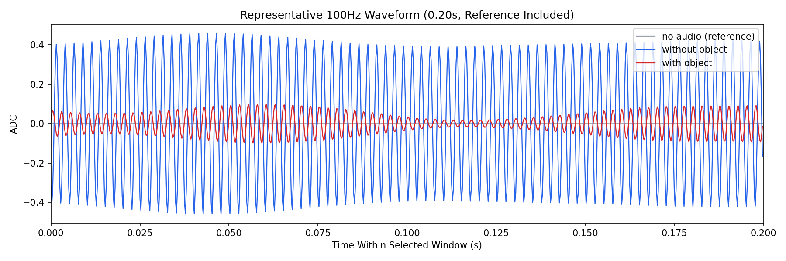

Background: F:\项目类文件夹\异物检测4.10\Data_Dual\frequency_sweep\0400Hz\repeat_05\raw\no_audio.csv
Without object: F:\项目类文件夹\异物检测4.10\Data_Dual\frequency_sweep\0400Hz\repeat_05\raw\without_object.csv
With object: F:\项目类文件夹\异物检测4.10\Data_Dual\frequency_sweep\0400Hz\repeat_05\raw\with_object.csv
| Metric | 无音频 | 100Hz无异物 | 100Hz有异物 | 无异物/无音频 | 有异物/无异物 | 有异物/无音频 |
|---|---|---|---|---|---|---|
| centered_rms | 0.017168 | 0.412717 | 0.306351 | 24.0398 | 0.7423 | 17.8443 |
| raw_target_amp | 0.000195 | 0.354397 | 0.148743 | 1816.4305 | 0.4197 | 762.3691 |
| filtered_rms | 0.001870 | 0.255126 | 0.106606 | 136.4645 | 0.4179 | 57.0227 |
| filtered_target_amp | 0.000195 | 0.354397 | 0.148743 | 1816.4305 | 0.4197 | 762.3691 |
| filtered_energy_ratio | 0.011858 | 0.382125 | 0.121095 | 32.2238 | 0.3169 | 10.2117 |
| window_filtered_target_amp_mean | 0.000766 | 0.357429 | 0.143667 | 466.5956 | 0.4019 | 187.5461 |
| window_filtered_target_amp_std | 0.002083 | 0.042267 | 0.040432 | 20.2960 | 0.9566 | 19.4150 |




